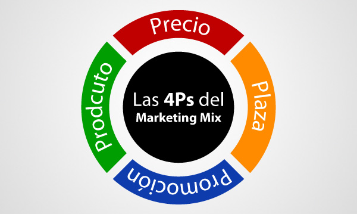
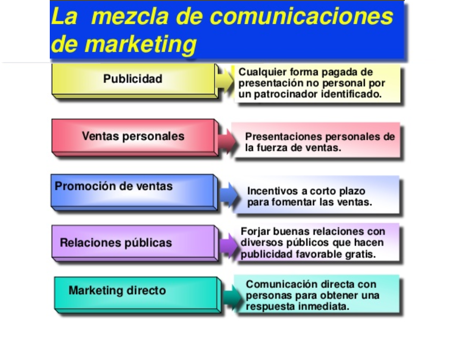
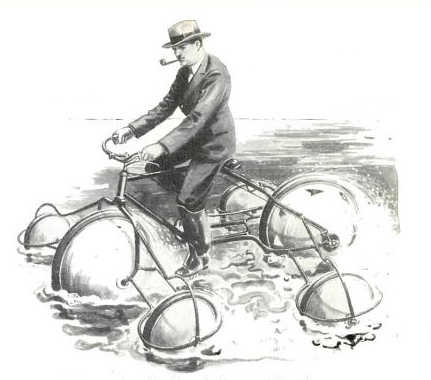
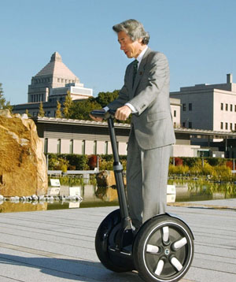
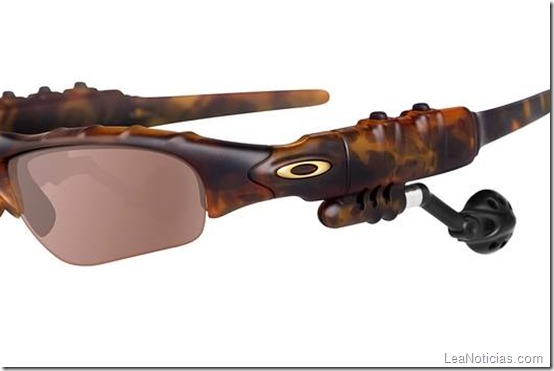
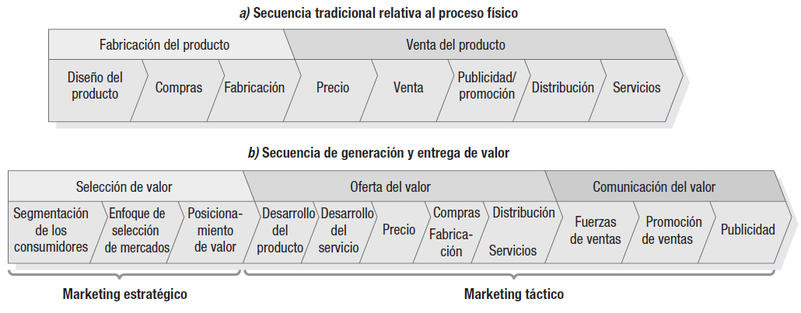

Marketing — Parcial 1
Resumen completo + quizzes + parciales simulacro
Cada tema incluye teoria + quiz al final para autoevaluacion. Usa V/F o opcion multiple. El progreso se guarda automaticamente en el navegador. Al final hay 2 parciales simulacros completos.
1. ¿Que es el Marketing?
El marketing es dirigir el flujo de bienes y servicios del productor al consumidor, satisfaciendo necesidades y alcanzando los objetivos empresariales.
Definicion social (Kotler & Keller)
Proceso donde grupos consiguen lo que necesitan y desean mediante la creacion, oferta e intercambio libre de productos y servicios de valor.
Definicion empresarial
Conocer al consumidor tan bien que la venta se vuelva inevitable. El producto o servicio se vende solo.
Concepto de Valor
El consumidor acepta un sacrificio (dinero, tiempo, esfuerzo) porque el beneficio lo supera. Si beneficio > sacrificio, se concreta el intercambio.
Compras un cafe a $1.500. Sacrificio: los $1.500 y el tiempo de hacer la cola. Beneficio: sabor, energia, calidez, ambiente del local. Si el total supera los $1.500 percibidos, la transaccion tiene valor para vos.
Elementos del intercambio
- Dos partes con algo para ofrecer
- Libertad de aceptar o rechazar
- Comunicacion entre las partes
- Beneficio mutuo (gana-gana)
Ver explicacion
Es al reves: el beneficio debe superar al sacrificio. Si no, no hay intercambio.
2. Las 4 P's (Marketing Mix)
Las 4 P's son las variables controlables de la empresa. Son operativas, de corto plazo, y se combinan para llegar al consumidor. McCarthy (1960) fue quien las sistematizo.

Producto
Conjunto de atributos (tangibles e intangibles) que satisfacen una necesidad.
Subvariables: calidad, aspecto/estilo, marca, empaque, tamaño, servicios post-venta, garantias, variedad de modelos.
Precio
Valor monetario de satisfacer la necesidad. La unica P que genera ingresos; las otras son costos.
Subvariables: precio de lista, descuentos (motivo puntual), bonificaciones (por volumen), formas y plazos de pago.
Plaza (Distribucion)
Hacer llegar el producto al consumidor en el lugar y momento correctos.
Subvariables: canales (mayoristas, minoristas, intermediarios), cobertura (cantidad de puntos de venta), localizacion, inventario, logistica, transporte.
Promocion (Comunicacion)
Informar, persuadir y recordar. Se descompone en la Mezcla de Comunicacion (5 elementos — ver abajo).
La Mezcla de Comunicacion (5 elementos de la P de Promocion)

| Elemento | Que es | Ejemplo |
|---|---|---|
| Publicidad | Mensaje comercial pago en medios masivos | Comercial de TV, cartel en ruta, anuncio en IG |
| Promocion de venta | Incentivo de corto plazo | 2x1, descuentos, muestras gratis, demostraciones |
| Venta personal | Administracion de la fuerza de ventas + tecnica de venta | Vendedor de seguros, representante comercial |
| Relaciones publicas | Puntos de contacto con el publico fuera del control directo de marketing | Atencion al cliente, eventos, gestion de reputacion |
| Marketing directo | Sin intermediarios | Email marketing, telemarketing, catalogos |
Publicidad es pago + masivo. Promocion de venta es un incentivo (descuento, muestra). Relaciones publicas no se paga directamente (no es un aviso), son acciones que influyen la percepcion.
3. Miopia del Marketing
Concepto de Theodore Levitt (Harvard Business Review, 1960). Es el error de definir el negocio por el producto en lugar de por la necesidad que se satisface.

La empresa miope no detecta competidores de otras industrias que resuelven la misma necesidad. Cree que su competencia es solo la que fabrica lo mismo que ella.
Casos clasicos
| Mirada miope | Mirada correcta (orientada al mercado) |
|---|---|
| Ferrocarriles | Transporte |
| Peliculas (cine) | Entretenimiento |
| Petroleo | Energia |
| Celulares | Comunicacion efectiva |
| Kodak (fotografia analogica) | Inmortalizar imagenes / recuerdos |
Ejemplos modernos
Kodak
No vio a los celulares como competencia. Pensaba que su negocio era fotografia analogica, pero era inmortalizar imagenes. Cuando la gente empezo a usar el celular para sacar y guardar fotos, Kodak perdio el mercado.
Blockbuster / Cines
Creian que su negocio era "alquilar peliculas" o "vender entradas de cine". El verdadero negocio era entretenimiento audiovisual en casa. Netflix / streaming reemplazaron.
Al definir la mision de tu empresa, preguntate: ¿Que necesidad estoy satisfaciendo? (no "que producto hago"). Asi identificas a tu competencia real.
Ver explicacion
Falso. Justamente eso es la miopia: solo ve competidores que fabrican lo mismo y no detecta sustitutos de otras industrias.
4. Evolucion del Marketing
Segun Kotler (base del examen de Romero)
| Enfoque | Epoca | Logica del mercado |
|---|---|---|
| Produccion | 1750 | Demanda > oferta. Se produce en masa, el consumidor compra lo que hay. |
| Ventas | 1930 | Oferta > demanda. Se vende a toda costa, objetivo es liquidar stock. |
| Marketing | 1950s | Nacen las 4 P's. Foco en el consumidor y sus necesidades. |
| Holistico | 1990s | Vision abarcativa con 4 componentes (integrado, interno, relacional, social). |
Marketing Holistico (4 componentes)
Integrado
Mensaje unificado, las 4 P's alineadas entre si.
Interno
Motivar y capacitar a los empleados. El empleado debe ser "embajador" de la marca.
Relacional
Relaciones duraderas con clientes y stakeholders (proveedores, distribuidores, etc.).
Social
Aportar a la comunidad. Responsabilidad social empresarial.
Segun Lambin (misma historia, otra terminologia)
| Lambin | = Kotler | Caracteristica |
|---|---|---|
| Pasivo | Produccion | Marketing tiene rol minimo, la empresa vende lo que produce. |
| De organizacion | Ventas | Optica de venta, "marketing salvaje" (venta forzada, publicidad engañosa). Autodestructor. |
| Activo | Marketing / holistico | Marketing estrategico guia decisiones de producto. |

Marketing 1.0 al 5.0 (Kotler - evolucion moderna)
| Era | Centro | Propuesta de valor |
|---|---|---|
| 1.0 | Producto | Funcional |
| 2.0 | Consumidor | Funcional + emocional |
| 3.0 | Valores | + espiritual, RSC, proposito |
| 4.0 | Digital | Omnicanal. "La mejor publicidad la hacen los clientes satisfechos" |
| 5.0 | Tecnologia | IA, Big Data, CX (experiencia del cliente) |
5. Entornos
Conjunto de fuerzas que influyen en el desempeño de la organizacion. La empresa no los controla pero debe conocerlos para adaptarse.
Entorno Interno
Dentro de la empresa: RRHH, produccion, marketing, finanzas, administracion.
Microentorno (directo, corto plazo)
Consumidores
El factor mas relevante. Dos tipos:
- Mercado de consumo: personas/familias compran para si
- Mercado industrial: empresas compran para producir/revender
Competencia (3 niveles)
- De necesidades: comer vs entretenerse
- De producto: auto vs moto
- De marca: Coca vs Pepsi (la mas intensa)
Intermediarios
Canal de distribucion: mayoristas, minoristas. Encarecen el producto pero dan alcance.
Proveedores
Quien provee materia prima, insumos, servicios necesarios para producir.
Macroentorno (indirecto, largo plazo, no controlable)
Lo que afecta a todas las empresas por igual. Variables:
- Demografico: edad, genero, densidad poblacional
- Geografico: clima, region, relieve
- Economico: inflacion, tasa de interes, PBI, poder adquisitivo
- Sociocultural: valores, creencias, tendencias
- Natural: recursos disponibles, clima, ecologia
- Tecnologico: nuevas tecnologias, digitalizacion
- Politico-legal: leyes, normativa, estabilidad politica
Micro = directo / corto plazo / actores cercanos (consumidor, competencia, intermediarios, proveedores).
Macro = indirecto / largo plazo / fuerzas generales (demo, geo, eco, socio, natural, tecno, politico-legal).
Ver explicacion
La empresa no controla ni el micro ni el macroentorno. Solo controla el entorno interno y las 4 P's.
Ver explicacion
El mercado industrial: existe porque hay demanda de consumo detras.
6. Clases de Mercado
Mercado de Consumo
Personas o familias que compran para satisfacer necesidades propias.
Caracteristicas: muchos compradores, compra emocional/racional, compras frecuentes de bajo volumen.
Mercado Industrial u Organizacional
Empresas que compran para producir, revender o usar en su actividad.
Caracteristicas:
- Demanda derivada (existe porque hay demanda de consumo)
- Pocos compradores pero gran volumen
- Compra racional
- Demanda inelastica (poco sensible al precio)
- Negociaciones complejas

Ver explicacion
Al reves: el industrial compra racional (evaluando costo, especificaciones, contratos). El consumo puede ser mas emocional.
7. Marketing Estrategico vs Operativo (Lambin)

| Estrategico | Operativo (tactico) | |
|---|---|---|
| Funcion | Analisis | Accion |
| Plazo | Medio-largo | Corto |
| Que hace | Analiza necesidades, segmenta, evalua atractivo del mercado y competitividad | Usa las 4 P's para vender y llegar al cliente |
| Resultado | Eleccion de producto-mercado, ventaja competitiva | Cuota de mercado, cifra de ventas |
Sin estrategia, el operativo es riesgo inutil (gastas plata en 4 P's sin rumbo). Sin operativo, la estrategia no se ejecuta (queda en el papel). El operativo no puede crear demanda donde no hay necesidad.
Ver explicacion
Falso. El operativo solo trabaja sobre necesidades que ya existen. Detectarlas y activarlas es tarea del marketing estrategico.
8. Planeamiento Estrategico
Decidir hoy que hacer mañana teniendo en cuenta el entorno. Es una filosofia de adaptacion permanente (a diferencia del planeamiento ordinario que no considera el entorno).
1) ¿Quienes somos? (mision / vision) → 2) ¿Donde estamos? (analisis) → 3) ¿Adonde vamos? (objetivos) → 4) ¿Como? (estrategia)
Los 6 pasos del planeamiento
| # | Paso | Que se hace |
|---|---|---|
| 1 | Analisis de situacion | Recopilar info de todos los entornos (interno, micro, macro) |
| 2 | Diagnostico (FODA) | Encontrar Fortalezas, Oportunidades, Debilidades, Amenazas |
| 3 | Objetivos | Que se quiere lograr (realistas, definidos DESPUES del diagnostico) |
| 4 | Estrategia | Como adaptarse al entorno para lograr los objetivos |
| 5 | Implementacion | Llevar a la realidad con las 4 P's (no existen sin los pasos previos) |
| 6 | Control | Comparar resultados reales vs objetivos; ajustar |
Mision y Vision
Mision (presente — DAR)
Lo que la organizacion quiere entregar a la sociedad. Razon de ser.
Clave: debe orientarse al mercado, no al producto (para evitar miopia).
Ej: Revlon no "fabrica cosmeticos" sino que "vende esperanza".
Vision (futuro — SER)
Lo que la organizacion quiere llegar a ser. Aspiracion de largo plazo.
Ej: "Ser la empresa mas admirada del sector en Latinoamerica para 2030".
Ver explicacion
Falso. La vision habla del futuro (SER). La mision es el presente (DAR).
9. Analisis FODA + Estrategias cruzadas
Herramienta de diagnostico. Separa lo positivo y lo negativo, lo interno y lo externo.
Recursos, capacidades propias que ventajizan
Carencias internas que desventajan
Tendencias externas favorables
Tendencias externas desfavorables
El FODA tiene que ser REAL. Nada de "posibilidad", "riesgo" o "potencial". Debe dar a entender que ya es un hecho.
✗ MAL: "Podria aumentar la competencia"
✓ BIEN: "Hay un aumento de competidores en la zona"
Ejemplos tipicos de cada cuadrante
Fortalezas (F)
- Productos de calidad
- Costos bajos
- Capacidad financiera
- Ubicacion estrategica
- Personal capacitado
Oportunidades (O)
- Producto se pone de moda
- Competidor se retira
- Subsidios del estado
- Apertura de nuevo mercado
Debilidades (D)
- Mano de obra poco calificada
- Problemas de logistica
- Baja calidad del producto
- Alto endeudamiento
Amenazas (A)
- Inseguridad en la zona
- Competencia agresiva
- Inflacion / recesion
- Sequias / desastres naturales
- Cambios regulatorios adversos
Estrategias cruzadas del FODA (matriz FO / DO / FA / DA)
Usar F para aprovechar O. Posicion ideal
Superar D aprovechando O
Usar F para reducir A
Minimizar D y A. Precaria
FO: empresa con buena capacidad financiera (F) aprovecha que un competidor se retira (O) para expandirse.
DA: empresa con baja calidad (D) y competencia agresiva (A) lucha por sobrevivir, quiza necesita fusionarse.
Ver explicacion
Falso. La regla de Romero: el FODA debe ser real/concreto. "Podria" implica posibilidad futura, no un hecho actual.
10. Segmentacion
Dividir el mercado en subgrupos homogeneos segun criterios para poder ofrecer algo mas especifico a cada grupo.
Las 4 bases de segmentacion
| Base | Que analiza | Ejemplo |
|---|---|---|
| Demografica | Edad, sexo, ingresos, ocupacion, nivel educativo, tamaño familiar | Mujeres 25-35 de clase media |
| Geografica | Region, pais, clima, densidad (urbano/rural) | NEA argentino, urbano |
| Psicografica | Estilo de vida, personalidad, valores, actitudes | Consumidores ecologicos |
| Conductual | Beneficio buscado, lealtad, tasa y ocasion de uso | Sensibles al precio, heavy users |
Ningun producto satisface a todos por igual. Al segmentar puedes: (1) afinar la propuesta, (2) usar el presupuesto de mkt eficientemente, (3) posicionarte mejor en un grupo definido.
11. Posicionamiento
Hacer que el producto ocupe un lugar distintivo en la mente del consumidor con respecto a la competencia.
Se logra asociando la marca a una cualidad que evoque el recuerdo. Una sola idea, clara y fuerte.
- Volvo → seguridad
- Ferrari → velocidad / lujo deportivo
- Red Bull → energia
- Coca-Cola → felicidad
- Apple → diseño / innovacion
Relacion con la segmentacion
Segmentacion y posicionamiento van juntos: primero se segmenta, luego se posiciona en el segmento elegido. Ambos determinan el marketing mix (4 P's).
Ver explicacion
Falso. El posicionamiento es un lugar en la mente del consumidor, no fisico.
12. Formulacion de Estrategias (3 niveles)
Nivel 1 — Estrategia Corporativa
Se toma en la cima de la piramide. Abarca la organizacion en general.
- Definir la mision
- Identificar las unidades de negocio (UEN)
- Analizar y valorar la cartera de negocios
- Identificar nuevas areas de negocio → Matriz de Ansoff
Nivel 2 — Estrategia de UEN (Porter)
Ser competitivo = tener una cualidad que la competencia no puede igualar.
| Estrategia | Que busca | Ejemplo |
|---|---|---|
| Liderazgo en costos | Tener costos mas bajos que la competencia. Eficiencia. | Walmart, Zara |
| Diferenciacion | Ofrecer una cualidad unica percibida por el comprador (calidad, diseño, servicio). | Apple, Mercedes-Benz |
| Enfoque (concentracion) | Liderar solo en un segmento especifico del mercado. | Rolex (lujo), Ferrari (deportivo premium) |
Nivel 3 — Estrategia Funcional
Planificacion por area (marketing, finanzas, produccion, RRHH). En marketing se trabaja mercado meta, segmentacion, posicionamiento y 4 P's.
Corporativa (CEO / directorio) → UEN (gerente de unidad / Porter) → Funcional (gerentes de area / 4 P's). Cada nivel se apoya en el anterior.
13. Matriz de Ansoff (estrategias de crecimiento)
Herramienta para definir estrategias de crecimiento cruzando producto (actual/nuevo) con mercado (actual/nuevo).
actuales
Vender mas de lo mismo al mismo mercado (descuentos, publicidad, fidelizacion)
Lanzar productos nuevos al mercado actual (Apple con iPhone nuevo modelo)
nuevos
Llevar lo actual a mercados nuevos (nueva zona geografica, nuevo segmento)
Todo nuevo. Mayor riesgo
A mayor distancia de lo conocido, mayor riesgo. Penetracion es lo mas seguro; diversificacion lo mas arriesgado.
Tipos de Diversificacion
| Tipo | Que es | Ejemplo |
|---|---|---|
| Horizontal | Mismo target, otra necesidad | PepsiCo compra Toddy |
| Vertical | Integrarse hacia adelante (comprar cliente/distribuidor) o atras (comprar proveedor) | Arcor compra a su proveedor de azucar |
| Concentrica | Productos relacionados, hay sinergia | Empresa lactea lanza linea de yogures |
| Conglomerada | Productos sin relacion, no hay sinergia | Amazon entra a supermercados fisicos |
Parciales Simulacros
2 parciales completos integradores. Validan de forma automatica.
Parcial Simulacro 1
Integrador completo de Unidad 1 y 2 • 20 preguntas mixtas
Enunciado Parcial 1
Parcial Simulacro 2
Segundo simulacro con enfasis en casos y aplicacion • 20 preguntas
Enunciado Parcial 2
Ver explicacion
Falso. Las 4 P's son parte del marketing operativo.
Ver explicacion
Falso. Pertenece al nivel corporativo (estrategia de crecimiento de la empresa).
Marketing — UCES 2026 — Parcial 1 — Prof. Romero